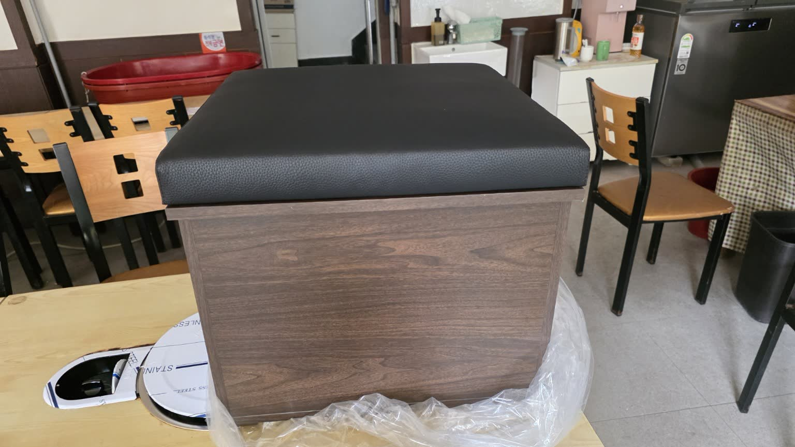
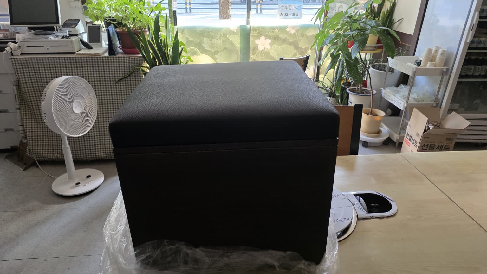
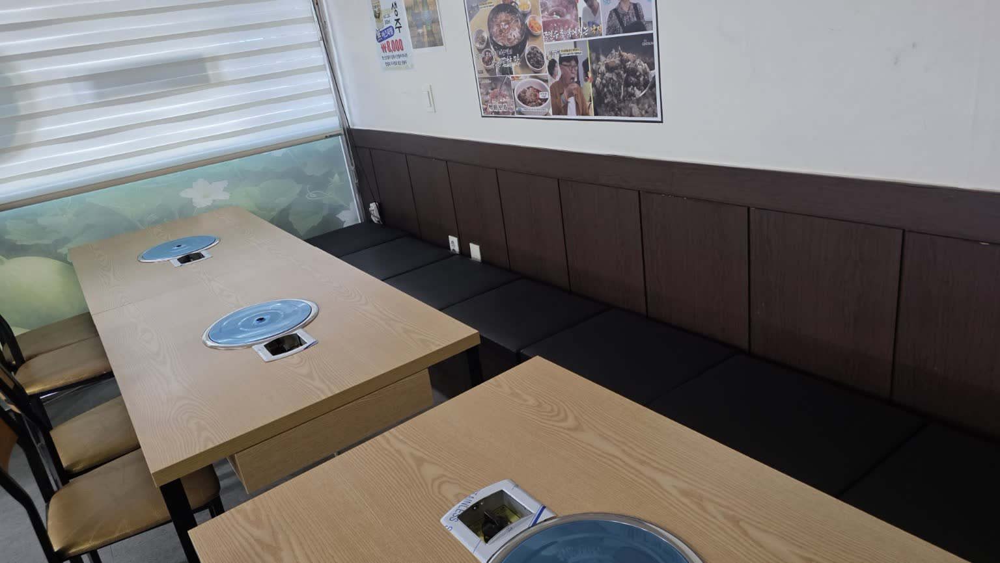
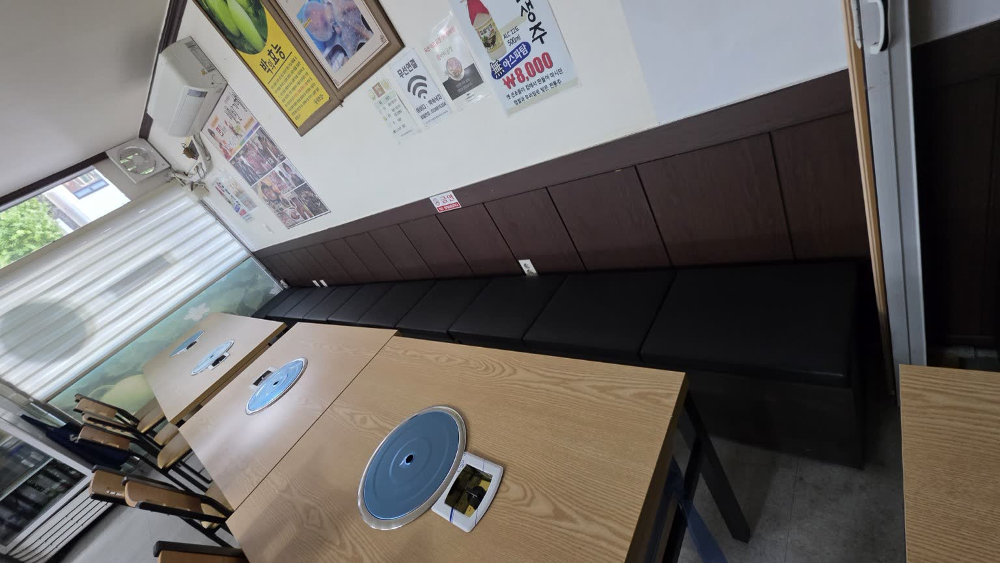

작업 정보
| 날짜 | 2026-09-29 |
|---|---|
| 대상 | 서해박속낙지 |
| 작업 | 매장용 스툴 제작 완료 |
| 제작처 | 신당동 광진소파 |
| 규격 | 500 × 500 × 450 mm |
| 분류 | 시설·인테리어 / 매장 집기 |
기록
첨부 자료에는 완성된 스툴 단독 모습과 기존 벽면 좌석 및 테이블 주변에 배치된 매장 내부 모습이 함께 기록되어 있습니다.
사진상 스툴은 검정색 쿠션 상판과 진한 우드톤의 하부로 구성되어 있으며, 기존 벽면 좌석의 검정색 쿠션 및 매장 우드톤과 함께 배치된 상태를 확인할 수 있습니다.
사진 기록




동영상 기록
스툴 제작 완료 상태 · H.264 웹 재생본
매장 배치 상태 · H.264 웹 재생본
원본 HEVC MP4는 그대로 보존하고, 브라우저 재생을 위해 별도의 H.264 파생본을 제공합니다.